LED配置
LED配置包括硬件配置和状态配置，在可视化配置工具中，配置界面在 LED配置 选项框中。
{kind=link}
LED配置界面
LED硬件配置
LED硬件配置指在具体的方案中，芯片IO与LED灯的硬件连接关系，用户需要根据硬件原理图进行配置，可配置的项目有：
{kind=link}
LED名 ：指代该LED的名称，需要保证不同LED配置不同的名字，该名称在 LED状态配置 中被引用；
IO名 ：指该LED在原理图上连接主控芯片的IO编号，点击可查看对应封装的可选IO口列表，根据原理选择对应IO即可；
点亮方式 ：指可以点亮该LED驱动方式，点击可查看驱动方式列表，根据LED正负极选择即可；
{kind=link}
{kind=link}
{kind=link}
LED状态配置
状态配置是用户定义不同UI的闪烁方式，并可以在情景配置中调用该闪烁方式，要显示一个完整的UI，对此有如下约定：
Important
每个UI状态包含若干个子状态；
子状态在时间轴上切换，周期循环或者单次状态；
UI显示原理如下图：
{kind=link}
UI显示原理示例图
每个子状态可以配置参数如图：
{kind=link}
子状态配置
状态名 ：定义LED UI状态的名称，用户根据UI特征命名即可，该名称在情景配置中 LED显示 中被引用；
LED名 ：LED硬件配置 中定义的名称；
状态 ：当前时刻设置的LED状态，可设置为 亮 和 灭 ；
时间 ：设置当前状态持续时间，单位为毫秒（ms）；
亮度 ：设置当前状态亮度，该配置当状态设置为 亮 时起作用，设置为 灭 是无效；
呼吸速率 ：设置为0时，是普通亮灭效果，设置为非0时，是呼吸效果，值越大，呼吸速率越快，从没到亮的时间越短；
与下一时刻的关系 ：支持如下选择：
等待：当时间设置为非0，且不是最后一个子状态时，需要设置为等待，表示在设置为指定状态需要持续一段时间，才切换到下一个子状态；
继续：当时间设置为0，且不是最后一个子状态时，需要设置为继续，表示在设置为指定状态后立即切换到下一个子状态；
结束：当子状态是最后一个子状态，且该UI状态只显示一次，需要配置为结束；
循环：当子状态是最后一个子状态，且该UI状态循环显示，需要配置为循环；
SDK默认状态配置分析：
红灯常亮
配置如图：
子状态1：蓝灯灭（复位上一状态蓝灯的状态），等待时间为0，并立即执行下一子状态；
子状态2：红灯亮，等待时间为0，并结束子状态切换；
执行上述2个子状态后，UI效果是蓝灯熄灭，红灯维持亮的状态，波形示例如下：
 红灯常亮时序
蓝灯慢闪（周期）
配置如图：
子状态1：红灯灭（复位上一状态红灯的状态），等待时间为0，并立即执行下一子状态；
子状态2：蓝灯亮，持续时间为100ms，等待持续时间结束后切换到下一子状态执行；
子状态3：蓝灯灭，持续时间为1900ms，持续时间结束后循环回到第一个子状态执行；
执行上述3个子状态后，UI效果是红灯熄灭，蓝灯亮100ms，然后熄灭1900ms，循环往复，整体周期是周期2000ms，波形示例如下：
 蓝灯慢闪时序
红蓝灯交替快闪（周期）
配置如图：
子状态1：红灯灭（复位上一状态红灯的状态），等待时间为0，并立即执行下一子状态；
子状态2：蓝灯灭（复位上一状态蓝灯的状态），等待时间为0，并立即执行下一子状态；
子状态3：红灯亮，持续时间为500ms，等待持续时间结束后切换到下一子状态执行；
子状态4：红灯灭，等待时间为0，并立即执行下一子状态；
子状态5：蓝灯亮，持续时间为500ms，等待持续时间结束后切换到下一子状态执行；
子状态6：蓝灯灭，等待时间为0，立即循环回到第一个子状态执行；
执行上述6个子状态后，UI效果是红灯亮500ms然后切换到蓝灯亮500ms，循环往复，整体周期是周期1000ms，波形示例如下：
 红蓝灯交替快闪时序
蓝灯闪3下（单次）
配置如图：
子状态1：红灯灭（复位上一状态红灯的状态），等待时间为0，并立即执行下一子状态；
子状态2：蓝灯亮，持续时间为300ms，等待持续时间结束后切换到下一子状态执行；
子状态3：蓝灯灭，持续时间为300ms，等待持续时间结束后切换到下一子状态执行；
子状态4：蓝灯亮，持续时间为300ms，等待持续时间结束后切换到下一子状态执行；
子状态5：蓝灯灭，持续时间为300ms，等待持续时间结束后切换到下一子状态执行；
子状态6：蓝灯亮，持续时间为300ms，等待持续时间结束后切换到下一子状态执行；
子状态7：蓝灯灭，等待时间为0，状态显示结束；
执行上述7个子状态后，UI效果是红灯亮灭3次，间隔是300ms，波形示例如下：
 蓝灯闪3下时序
红灯呼吸（周期）
配置如图：
子状态1：蓝灯灭（复位上一状态红灯的状态），等待时间为0，并立即执行下一子状态；
子状态2：红灯从灭到亮呼吸，并在呼吸到最高亮度时维持一段时间，呼吸+最高亮度维持时间为1000ms，维持时间与呼吸速率有关，呼吸速率越大，维持时间越长，等待持续时间结束后切换到下一子状态执行；
子状态3：红灯从亮到灭呼吸，持续时间为1000ms，注意： 亮度与持续时间，呼吸速率需要配置为与子状态2相同，保证效果对称，等待持续时间结束后切换到下一子状态执行；
子状态4：红灯灭，持续时间结束后循环回到第一个子状态执行。
执行上述4个子状态后，UI效果是红灯周期呼吸，波形示例如下：
 红灯呼吸时序
{kind=link}
{kind=link}
{kind=link}
{kind=link}
{kind=link}
{kind=link}
{kind=link}
{kind=link}
{kind=link}
{kind=link}
Attention
LED配置约束事项：
同一时刻只能显示一种UI状态；
硬件PWM模块只有一个，同一时刻只能点亮一个LED；